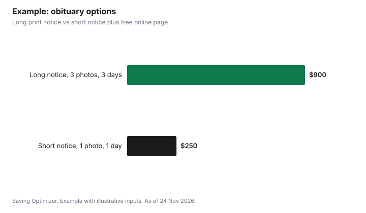

Events · Canada
Obituary and Death Notice Costs: A Canadian Cost Guide

An obituary in a Canadian newspaper is priced by the paper, usually by length, photos and days in print. Most papers, including the Toronto Star and Postmedia papers, show the price in their online form before you pay rather than publishing rates. La Presse publishes its packages, starting at $245 for up to 75 words with one photo for one day. Many families keep costs down with a short print notice that points to a free online tribute.
Key takeaways
- Papers price notices by length, photos and days. Ask for the total before approving the proof.
- La Presse's published packages start at $245 for up to 75 words, one photo, one day (as reported in November 2026).
- Most other papers, like the Toronto Star, show the price in the online form before you pay.
- Funeral homes and cremation providers often include a free online obituary page.
- No law requires an obituary. A short print notice plus a free online page is a common, cheaper choice.
How papers price notices
| Paper | How to submit | Price |
|---|---|---|
| La Presse | Death-notice desk | From $245 (up to 75 words, one photo, one day) |
| Toronto Star | Self-serve online form or classified desk | Shown in the form before you pay |
| Postmedia papers (Toronto Sun, Ottawa Citizen and others) | Self-serve online form | Shown in the form before you pay |
| The Globe and Mail | Death-notice desk | Ask for a quote |
Free options
- Your funeral home's or cremation provider's online obituary page, if included.
- Social media posts and community groups.
- Faith, community or alumni newsletters.
- An email or message to family and friends with a link to the online page.
Keeping the cost down
- Keep the print version short: name, dates, family, and the gathering details.
- Use one photo, not several.
- Run it for one day instead of several.
- Point readers to a free online page for the full story and photos.
- Ask the funeral home whether a notice is included before paying separately.
Other notices
An obituary isn't the same as a legal notice. In Quebec, a liquidator must publish a notice of closure of inventory; in Ontario, estate trustees often advertise for creditors. For funeral costs and benefits, see our funeral costs and CPP death benefit guide.
Plan: an example
A family compares a long print notice with three photos over three days, at an example $900, with a 75-word notice with one photo for one day at an example $250, plus a free online page.

Short notice: $250. Long notice: $900. The family saves $650 and still shares the full story online.
Sources
- Cleo, How to publish an obituary in Canada: steps and costs (last updated November 2026; La Presse packages from $245; Toronto Star and Postmedia self-serve forms), checked 24 Nov 2026.
- Toronto Star Obituaries support page (Create a Notice form), checked 24 Nov 2026.
Frequently asked questions
How much does an obituary cost in Canada?
It depends on the paper, length, photos and days. La Presse's packages start at $245 for up to 75 words with one photo; most other papers show the price in their online form before you pay.
Do you have to publish an obituary?
No. An obituary is a choice, not a legal requirement.
Can I place an obituary without a funeral home?
Usually yes. Most papers take notices from families, and may confirm the death with the funeral home or crematorium.
Are there free obituary options?
Yes. Many funeral homes and cremation providers include an online obituary page, and you can share on social media or in community newsletters.
How can I make an obituary cheaper?
Keep the print notice short, use one photo, run it one day, and link to a free online page.
Researched and drafted with AI assistance and fact-checked against official Canadian sources. How we create content.
Note: Prices are set by each paper and change. Ask for the total before you approve a notice. Education only.